The full KDE experience begins simply. Say hello to the workspace.
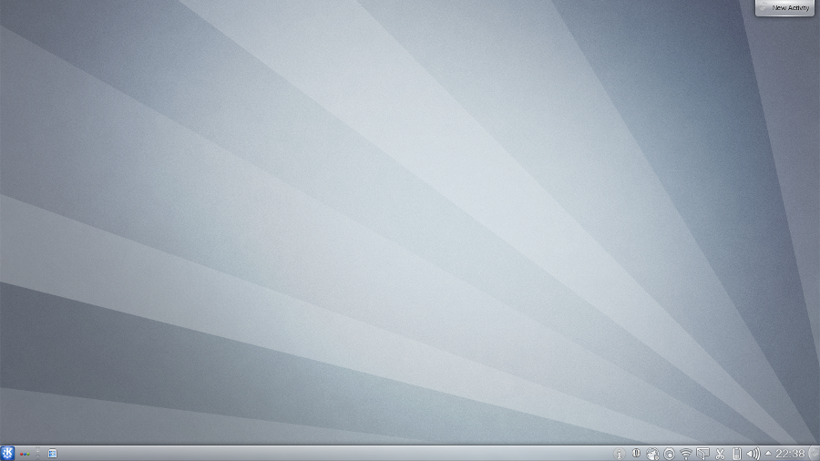
App menu. Task items. System tray. Clock. But you already know all that.
Choose from thousands of themes
Our community provides thousands of colourschemes, icons, window and desktop styles, splash screens - brought right to your desktop with a click of a button.
Accessible to all
Full control over contrast, font sizes and magnification.
Available in more than 50 languages
Translations are constantly being updated every version to introduce new languages.
Speedy even on low-end hardware
A workspace only needs ~256MB RAM to run, and has options to disable effects and fine-tune performance.
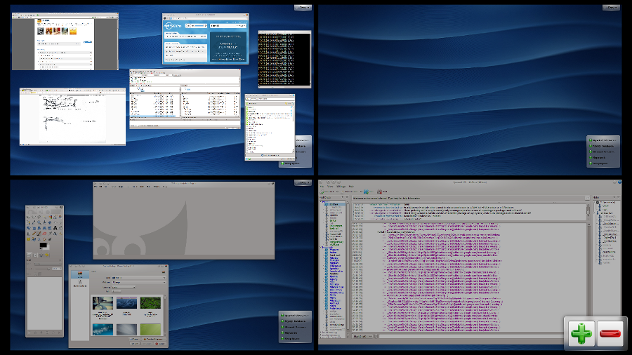
Too many windows, too little space. Solved.
As much or little as you want
There shouldn't be a limit on how much space you need to work. Add or remove as many as you need.
Quickly overview your work
A minified version of your desktops is available at all times via a pager. Zoom in and out to see everything at once.
Theme separately
Each virtual desktop can be tailored to what you put on it.
Think spatially
Very much like your physical worktable, spatial groupings makes windows easier to find and switch between.
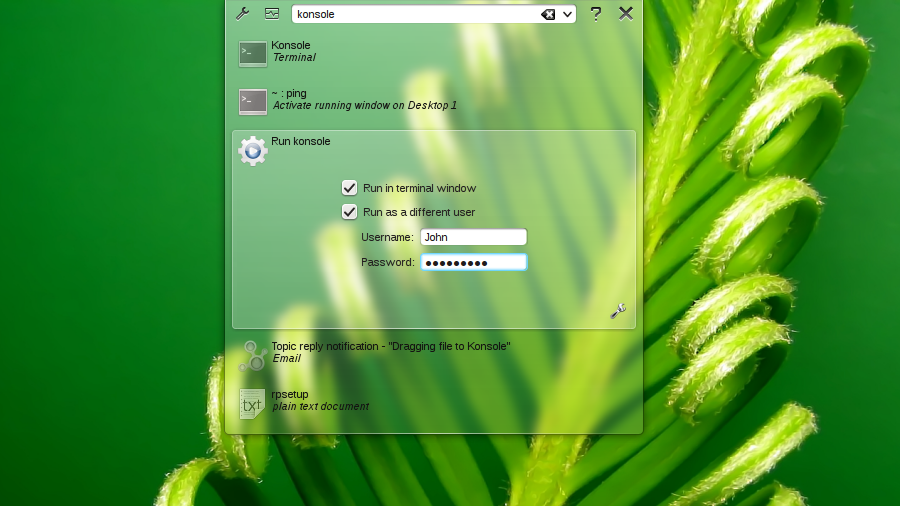
A powerful little box that completes your sentences.
Find information
Not just finding files and folders, but things you don't expect like contacts and emails too throughout your computer.
Quick-launch apps
Why hunt through a menu when you can get it instantly?
Recent documents
You were just working on it, so you shouldn't spent hours getting it again.
Calculate
Anytime you need a sum worked out, just punch the numbers in.
Web bookmarks & favourites
With the internet becoming an integral part of our lives, your desktop shouldn't get in your way.
Manage sessions
Switch windows, login sessions, activities and suspend / hibernate instantly when you're on the go.
Pop-up widgets
If you use a widget extensively, you can launch it as a standalone app.
Modes that suit you
If that isn't enough, more command plugins and be enabled and configured.
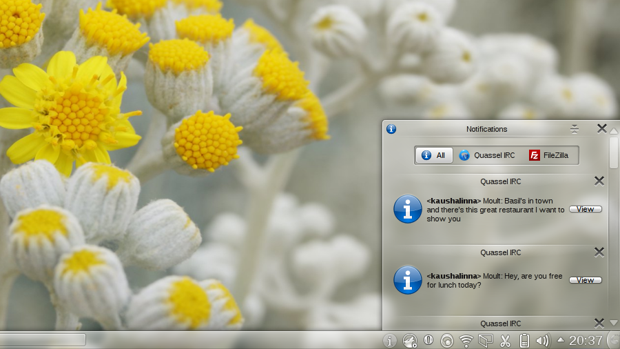
Your personal secretary that's there when you need it, and hidden when you don't.
Logged whilst your away
Notifications wait until you're ready to deal with them rather than bother you while you're working.
Monitor processes
Easily track progress when transferring files or downloading content rather than have multiple mini-windows clog up your screen.
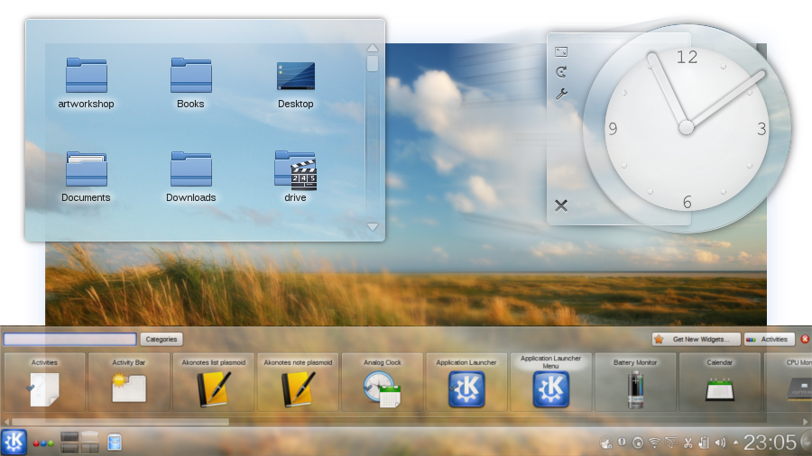
Decide exactly what you want, where, and when.
It's not just placing widgets
Everything, including panels and dashboards can be moved around, resized and rotated to exactly what you believe your desktop should be like.
More where that came from
Our community provides hundreds of extra useful widgets - brought right to your desktop with a click of a button.
Better than a calendar and clock
Widgets that automatically sort your files for you, connect to remote services, alternative launchers and task managers, music players, and web browsers.
Share across the network
Share widget setups and activities throughout multiple computers.
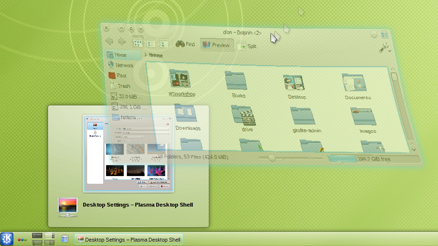
Just little details that make the polish shine without disturbing you.
A modern desktop
From subtle blurs and glows as you hover over items to full blown effects like flipping through your windows.
Part of your system
Effects aren't an add-on, they're part of the workspace. This means fast, stable, and responsive.
Doesn't slow you down
Only turn on effects which help the way you work, and turn the rest off. Disable everything for old computers.
Not just the desktop
A slight glint here, a shadow there, and discover how beautiful your windows and applications can look like.
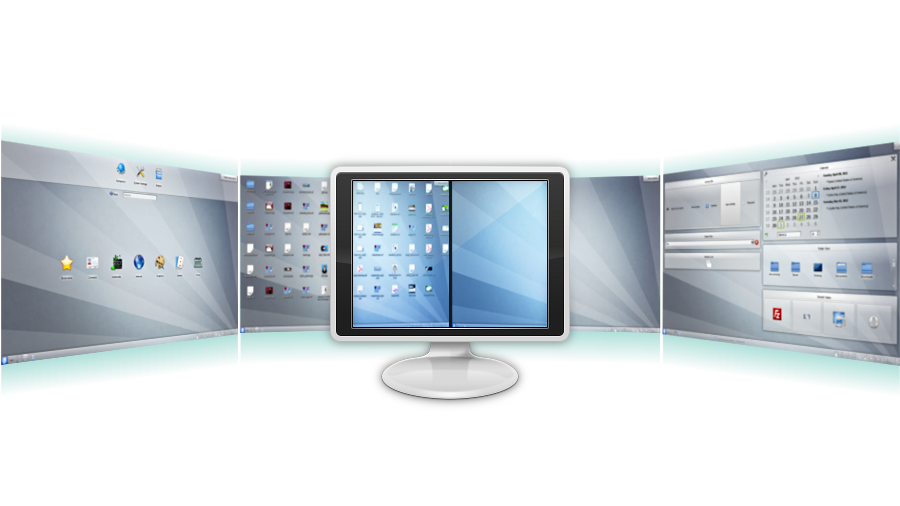
Dedicated interfaces for how you work.
Clean
When you just want nothing and nothing more, we've got your back.
Newspaper
Turn your desktop into part of your morning routine with your regular feeds and mail side by side.
Launcher
Excellent for smaller devices where screen space is valuable, your desktop turns into a search and launch platform.
Photos
Just like your desktop at home, your desktop can be your photo screen.
Classic
For those who like it the way it was and always should be done, we've got the classic desktop covered.
Custom-made
Along with the ability to customise everything, nothing's stopping you from building your own setup.
 Clever window tricks you can't live without.
Clever window tricks you can't live without.
Snap & tile
Windows snap to each other and screen edges - allowing you to split your screen into halves or quarters. Full tiling support available.
Control display order
Push windows above and below everything else in the stack, or make them appear across all desktops.
Window tabbing
Combine multiple related windows into a single tabbed group for better organisation.
Detailed presets
Have it so specific applications or windows always appear in a certain way, such as size, location, or in a style you've designed yourself.
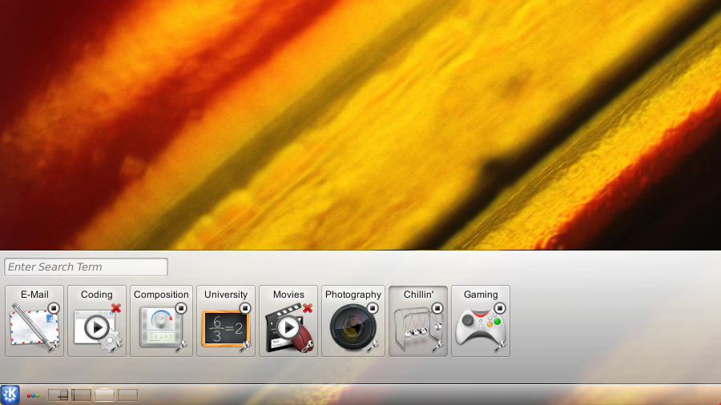
When your computer only shows you what's related to what you're doing.
Helps you focus
Workspaces offer a new way of organising what we do through Activities. Group windows and workspace setups into what's best for each task. Suspend and resume exactly where you left off from a previous task.
Beyond the desktop
Imagine if your computer could show you only the contacts, emails, and files that were related to what you were working on.
Covers the basics
Familiar and easy to pick up. No nasty suprises.
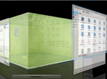
Virtual Desktops
One desktop isn't enough space sometimes. Why not more?
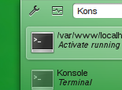
Type & Go
Begin typing, and search, launch apps, calculate, browse the web, and more.
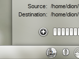
Integrated notifications
Unobtrusive and centralised, so it doesn't get in your way.
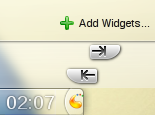
Customise everything
Modify panels and insert widgets based on how you work.

Smooth, intuitive effects
A beautiful, modern desktop that increases productivity.
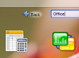
Alternative workflows
Sometimes you don't need a desktop. Sometimes you need to be yourself.
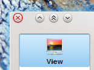
Full window control
Combine, tile, and pin windows, and share across activities and desktops.
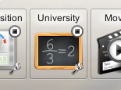
Knows what you're working on
Our life revolves around activities. Why doesn't your computer too?
It's your workspace.
You should be in control.
More